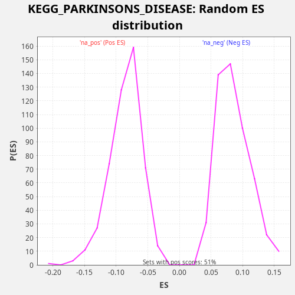

Profile of the Running ES Score & Positions of GeneSet Members on the Rank Ordered List
The same image in compressed SVG format
| Dataset | TCGA |
| Phenotype | NoPhenotypeAvailable |
| Upregulated in class | na_pos |
| GeneSet | KEGG_PARKINSONS_DISEASE |
| Enrichment Score (ES) | 0.24629867 |
| Normalized Enrichment Score (NES) | 2.8885214 |
| Nominal p-value | 0.0 |
| FDR q-value | 0.0 |
| FWER p-Value | 0.0 |
| SYMBOL | RANK IN GENE LIST | RANK METRIC SCORE | RUNNING ES | CORE ENRICHMENT | |
|---|---|---|---|---|---|
| 1 | NDUFA4L2 | 22 | 16.962 | 0.0089 | Yes |
| 2 | COX7C | 417 | 3.037 | -0.0020 | Yes |
| 3 | NDUFC1 | 847 | 1.621 | -0.0148 | Yes |
| 4 | COX4I1 | 973 | 1.405 | -0.0114 | Yes |
| 5 | NDUFA10 | 1035 | 1.307 | -0.0046 | Yes |
| 6 | NDUFA7 | 1049 | 1.294 | 0.0048 | Yes |
| 7 | NDUFB8 | 1091 | 1.226 | 0.0127 | Yes |
| 8 | UBA7 | 1139 | 1.167 | 0.0203 | Yes |
| 9 | NDUFA1 | 1203 | 1.078 | 0.0271 | Yes |
| 10 | NDUFA5 | 1204 | 1.076 | 0.0372 | Yes |
| 11 | UBB | 1237 | 1.034 | 0.0456 | Yes |
| 12 | COX5A | 1245 | 1.024 | 0.0553 | Yes |
| 13 | SLC25A6 | 1306 | 0.958 | 0.0622 | Yes |
| 14 | NDUFB10 | 1601 | 0.741 | 0.0566 | Yes |
| 15 | UQCRC2 | 1868 | 0.595 | 0.0525 | Yes |
| 16 | NDUFA2 | 2127 | 0.477 | 0.0488 | Yes |
| 17 | NDUFB1 | 2364 | 0.398 | 0.0463 | Yes |
| 18 | COX7A2 | 2368 | 0.397 | 0.0562 | Yes |
| 19 | NDUFS4 | 2539 | 0.346 | 0.0572 | Yes |
| 20 | UQCR11 | 2636 | 0.317 | 0.0622 | Yes |
| 21 | COX5B | 2680 | 0.304 | 0.0700 | Yes |
| 22 | CASP9 | 2740 | 0.288 | 0.0770 | Yes |
| 23 | NDUFB4 | 2851 | 0.261 | 0.0812 | Yes |
| 24 | NDUFS7 | 2895 | 0.253 | 0.0890 | Yes |
| 25 | COX4I2 | 2967 | 0.242 | 0.0953 | Yes |
| 26 | NDUFB3 | 2995 | 0.236 | 0.1040 | Yes |
| 27 | VDAC1 | 3101 | 0.217 | 0.1085 | Yes |
| 28 | NDUFA6 | 3112 | 0.215 | 0.1180 | Yes |
| 29 | COX7B | 3116 | 0.215 | 0.1280 | Yes |
| 30 | UQCRH | 3123 | 0.213 | 0.1377 | Yes |
| 31 | NDUFA3 | 3342 | 0.180 | 0.1362 | Yes |
| 32 | COX6A1 | 3445 | 0.165 | 0.1409 | Yes |
| 33 | NDUFV3 | 3646 | 0.138 | 0.1403 | Yes |
| 34 | UQCRQ | 3828 | 0.118 | 0.1407 | Yes |
| 35 | UQCRHL | 3967 | 0.105 | 0.1434 | Yes |
| 36 | NDUFS8 | 4034 | 0.099 | 0.1500 | Yes |
| 37 | UQCR10 | 4092 | 0.094 | 0.1571 | Yes |
| 38 | NDUFV2 | 4161 | 0.088 | 0.1635 | Yes |
| 39 | NDUFB2 | 4397 | 0.072 | 0.1611 | Yes |
| 40 | UQCRB | 4503 | 0.065 | 0.1656 | Yes |
| 41 | VDAC3 | 4827 | 0.046 | 0.1584 | Yes |
| 42 | APAF1 | 4896 | 0.042 | 0.1649 | Yes |
| 43 | COX6B1 | 5052 | 0.035 | 0.1667 | Yes |
| 44 | PARK7 | 5106 | 0.033 | 0.1740 | Yes |
| 45 | NDUFS5 | 5175 | 0.030 | 0.1804 | Yes |
| 46 | NDUFS1 | 5186 | 0.030 | 0.1900 | Yes |
| 47 | NDUFA4 | 5294 | 0.027 | 0.1944 | Yes |
| 48 | SDHD | 5298 | 0.026 | 0.2043 | Yes |
| 49 | UQCRC1 | 5627 | 0.017 | 0.1969 | Yes |
| 50 | NDUFS3 | 5812 | 0.013 | 0.1972 | Yes |
| 51 | NDUFB7 | 5876 | 0.012 | 0.2039 | Yes |
| 52 | UBE2J2 | 6308 | 0.006 | 0.1910 | Yes |
| 53 | SLC25A31 | 6403 | 0.005 | 0.1961 | Yes |
| 54 | COX8A | 6436 | 0.005 | 0.2045 | Yes |
| 55 | PINK1 | 6494 | 0.004 | 0.2115 | Yes |
| 56 | CASP3 | 6951 | 0.001 | 0.1973 | Yes |
| 57 | VDAC2 | 7003 | 0.001 | 0.2046 | Yes |
| 58 | SDHB | 7095 | 0.000 | 0.2099 | Yes |
| 59 | NDUFC2 | 7618 | -0.000 | 0.1921 | Yes |
| 60 | NDUFB5 | 7741 | -0.000 | 0.1957 | Yes |
| 61 | NDUFAB1 | 7923 | -0.001 | 0.1961 | Yes |
| 62 | TH | 8168 | -0.003 | 0.1932 | Yes |
| 63 | PPID | 8299 | -0.004 | 0.1963 | Yes |
| 64 | COX6C | 8337 | -0.004 | 0.2045 | Yes |
| 65 | CYC1 | 8340 | -0.004 | 0.2144 | Yes |
| 66 | UBE2L3 | 8441 | -0.005 | 0.2192 | Yes |
| 67 | NDUFB9 | 8569 | -0.007 | 0.2225 | Yes |
| 68 | CYCS | 8799 | -0.010 | 0.2204 | Yes |
| 69 | SLC25A4 | 8942 | -0.012 | 0.2229 | Yes |
| 70 | NDUFA9 | 9240 | -0.018 | 0.2171 | Yes |
| 71 | NDUFV1 | 9300 | -0.019 | 0.2241 | Yes |
| 72 | SDHC | 9363 | -0.021 | 0.2309 | Yes |
| 73 | NDUFB6 | 9517 | -0.024 | 0.2328 | Yes |
| 74 | UBE2G2 | 9700 | -0.029 | 0.2332 | Yes |
| 75 | UBE2G1 | 9954 | -0.037 | 0.2298 | Yes |
| 76 | SDHA | 10264 | -0.050 | 0.2234 | Yes |
| 77 | UBE2L6 | 10301 | -0.052 | 0.2315 | Yes |
| 78 | NDUFA8 | 10344 | -0.053 | 0.2394 | Yes |
| 79 | NDUFS2 | 10559 | -0.065 | 0.2381 | Yes |
| 80 | COX7B2 | 10595 | -0.067 | 0.2463 | Yes |
| 81 | UBE2J1 | 11187 | -0.104 | 0.2248 | No |
| 82 | COX6B2 | 11282 | -0.110 | 0.2299 | No |
| 83 | SLC25A5 | 11509 | -0.129 | 0.2279 | No |
| 84 | COX6A2 | 11545 | -0.132 | 0.2362 | No |
| 85 | UQCRFS1 | 11562 | -0.134 | 0.2454 | No |
| 86 | SNCAIP | 12035 | -0.185 | 0.2303 | No |
| 87 | NDUFS6 | 12127 | -0.197 | 0.2355 | No |
| 88 | UBA1 | 12551 | -0.260 | 0.2230 | No |
| 89 | COX7A2L | 12862 | -0.317 | 0.2166 | No |
| 90 | COX7A1 | 14510 | -0.880 | 0.1387 | No |
| 91 | SLC6A3 | 15031 | -1.209 | 0.1210 | No |
| 92 | HTRA2 | 15495 | -1.625 | 0.1064 | No |
| 93 | SNCA | 15917 | -2.132 | 0.0940 | No |
| 94 | LRRK2 | 17112 | -4.720 | 0.0403 | No |
| 95 | SLC18A2 | 17149 | -4.822 | 0.0485 | No |
| 96 | COX8C | 17313 | -5.504 | 0.0499 | No |
| 97 | GPR37 | 17811 | -7.888 | 0.0334 | No |
| 98 | SLC18A1 | 17908 | -8.479 | 0.0384 | No |
| 99 | UCHL1 | 18569 | -17.523 | 0.0132 | No |

{kind=link}
{kind=link}